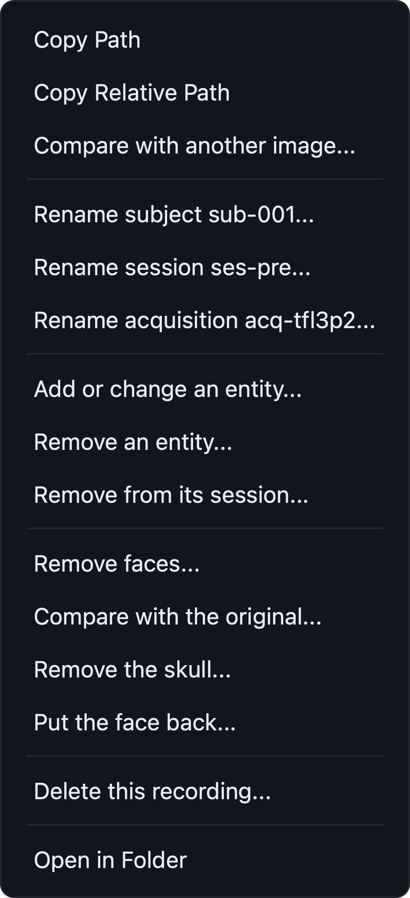
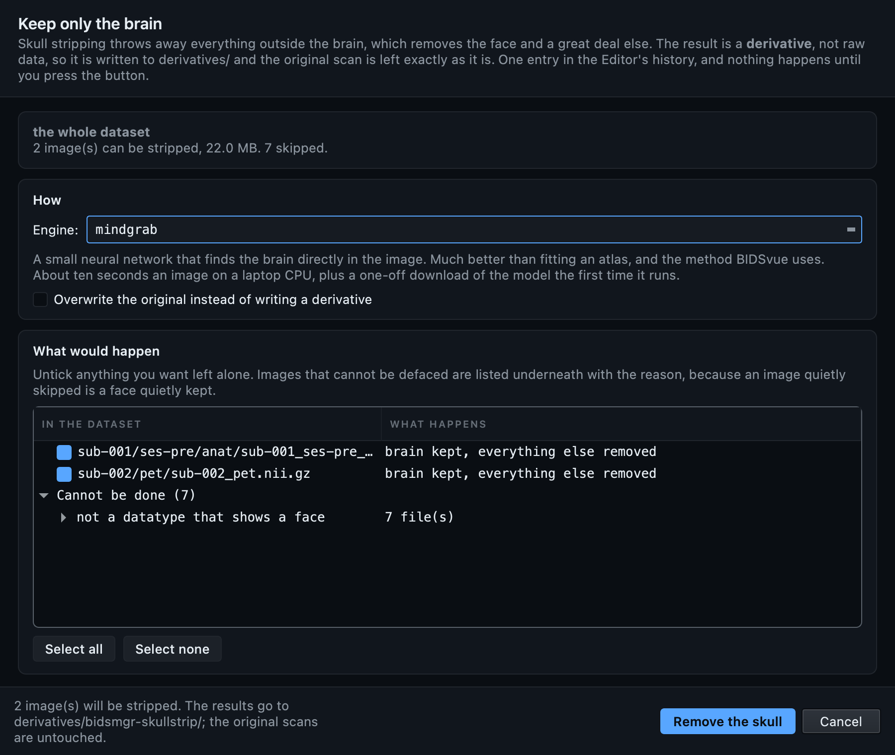
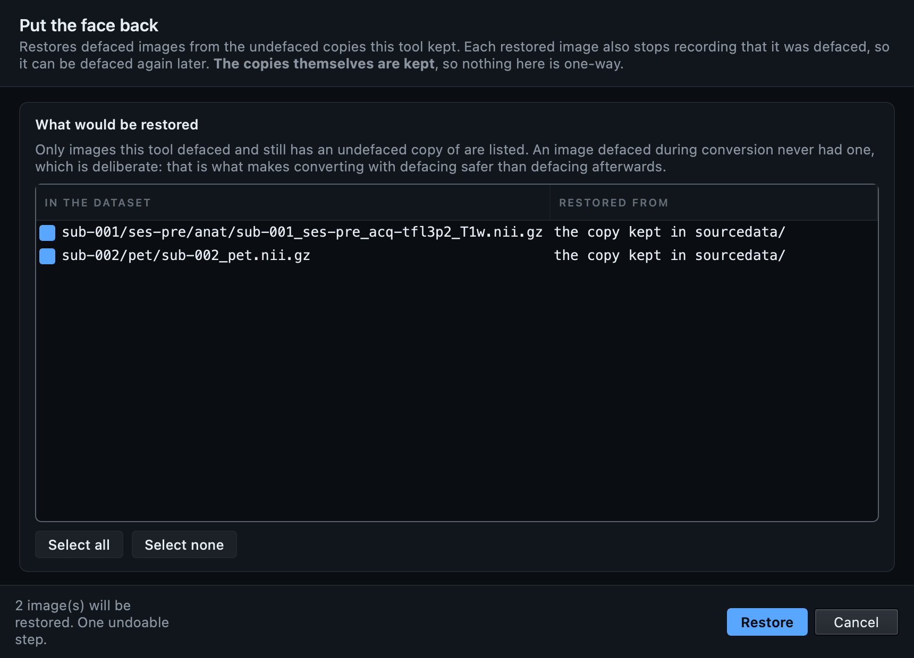
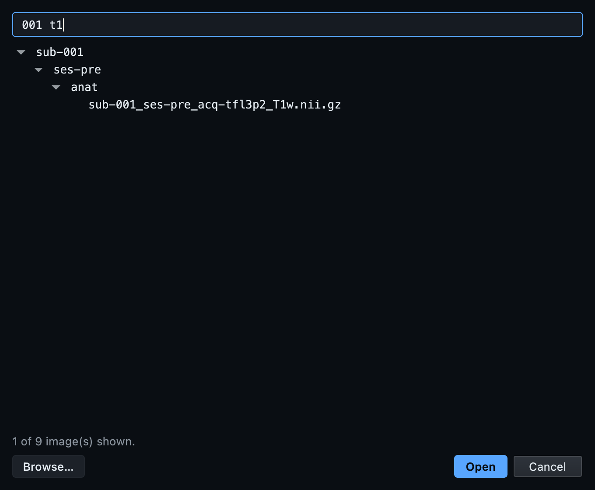

Remove the face. Check that you did.
A head MRI contains a face, and a face can be rendered from one, so a dataset shared with its faces intact is a dataset shared with its participants identifiable. BIDS Manager removes faces in three places, keeps the original so the operation can be undone, and gives you a before-and-after viewer to confirm that the right thing was removed.
Both engines ship with BIDS Manager. There is no FSL, no FreeSurfer, no ANTs and no separate download to arrange, and nothing here needs the command line.
Why a face matters, and why checking matters more.
Removing identifiers from the sidecar does not deidentify a head scan. A T1w has enough of the face in it to render a recognisable portrait, and face-recognition software has been shown to match such renders to photographs. If your consent or your repository requires deidentified imaging, the pixels are part of what has to be dealt with, not only the metadata.
Every defacing tool ends its documentation by telling you to inspect the result, and then leaves you to find your own viewer. That advice is not decoration, because defacing fails in two opposite directions and both are easy to see and impossible to reason about:
- Too little removed and the participant is still identifiable, which is the failure you were trying to avoid in the first place.
- Too much removed and the front of the brain or the cerebellum has gone with it. That quietly ruins the analysis, and it passes every validator, because a smaller brain is still a valid NIfTI.
So the before-and-after viewer is part of the feature rather than an extra, and this page treats checking the result as a step, not a suggestion.
Two jobs, five engines.
Defacing blanks the voxels that carry the face and leaves everything else, including the skull, alone. The result is still raw data, so it replaces the image in place. Skull stripping throws away everything outside the brain, which removes the face and a great deal besides. That result is a derivative, and it is written as one. Pick by what you need to share, not by which sounds more thorough.
| Engine | Job | How it works | When |
|---|---|---|---|
allineate |
Deface | Registers a face mask from the avg152T1 atlas and blanks what the mask covers. | The default. Right for most images, and about two seconds each. |
allineate-robust |
Deface | The same, after cropping the neck and lower head first. | Steadier when the scan reaches well below the chin. Note that it changes the image dimensions: the cropped slices are gone. |
allineate-afni |
Deface | The same, matched with an AFNI-style Hellinger cost instead of the fast one. | Slower. Worth trying when the default fits badly. |
mindgrab |
Skull strip | A small neural network that finds the brain directly in the image. | The default for stripping. About ten seconds an image on a laptop, plus a one-off model download the first time it runs. |
strip-atlas |
Skull strip | Registers a brain mask from the same atlas the defacer uses, and keeps what it covers. | Works offline with no model download, and it is an affine fit of an average brain: expect it to clip cortex in places and leave dura in others. |
allineate.
It is the default because it is the one that keeps the data you are going to analyse. Skull stripping is for when you need a brain-only image for a specific reason, and it gives you a derivative rather than a replacement.
None of these five are BIDS Manager's own work. They are niimath and brainchop, both established and openly licensed, and both credited in full at the end of this page. What BIDS Manager adds is everything around them: which files to treat, the preview, the copy kept so you can undo it, the record in the sidecar, and the viewer for checking the result.
During conversion: the safest moment.
Open Settings → Convert + post-convert and tick Deface. Every conversion from then on removes faces from anatomical and PET images before the subject is written.
This placement is worth understanding, because it is the one that actually protects a participant. Conversion assembles each subject in a temporary staging folder and moves it into the dataset only when everything has succeeded. Defacing runs inside that staging folder, as the last step before the move, so the identifiable image exists for a few seconds in a working directory and what lands in your dataset was never identifiable. Deface afterwards and there is a window, however short, in which a face-bearing image sat in a folder that may be synced, backed up or shared.

allineate unless you have a reason not
to.
A conversion-time deface keeps no copy, because there is nothing to keep: the undefaced version never existed inside the dataset. Your raw source data is untouched and is where a re-run starts from. If you want a copy you can compare against and restore from, deface from the Tools menu instead and tick keep the originals in sourcedata/.
From the Tools menu, on a dataset you already have.
Open the dataset in the Editor and choose Tools → Deface…. With nothing selected in the tree it acts on the whole dataset; with a subject, a session or a folder selected it acts on that.


By right-clicking, when you want one image.
Right-click anything in the BIDS tree. The same four actions are there, acting on what you clicked. Right-click inside an existing multiple selection and they act on the whole selection, which is how you deface four subjects and not the fifth.

.nii only, because comparing is per
image.
The skipped list is the half that matters.
A user told “4 images defaced” and not told that three more were skipped walks away with a dataset that still has a face in it and no reason to suspect one. So every image the selector walked past is on screen, with its reason, grouped so that seven fieldmaps skipped for one reason read as one fact rather than seven.
| Reason | What it means | What to do |
|---|---|---|
| not a single 3-D volume | A time series or a multi-echo file. The engines take one volume. | Nothing. A 4-D functional image does not carry a renderable face. |
| not a datatype that shows a face | The image is not in anat/ or
pet/. |
Nothing, usually. Fieldmaps and functional runs are skipped on purpose. |
| not raw subject data | It lives under derivatives/ or
outside a subject folder. |
Deface the raw image and regenerate the derivative, or treat the derivative as its own dataset. |
| not a readable NIfTI-1 image | The header could not be read. | Check the file. This usually means a truncated or corrupted image, which is worth knowing about anyway. |
| already defaced by BIDS Manager | The sidecar records a previous run. | Nothing. It is still listed and still tickable, so you can deliberately run a second engine over it. |
The run itself happens on a background thread with a progress bar and a Stop button. Stopping rolls the whole operation back rather than leaving half a dataset defaced, because a half-defaced dataset is the hardest state to recover from: it looks finished.
Look at what you removed.
Right-click the image and choose Compare with the original, or use Tools → Compare with the original with the image selected. The undefaced copy opens on the left and what is in the dataset opens on the right, driven as one: move the crosshair, change the plane, rotate the 3-D render, and both follow.
A mid-sagittal slice tells you the nose has gone. The 3-D render turned to face you tells you whether the result is still recognisable, which is the actual question.
Skull stripping writes a derivative.
Tools → Remove the skull…, or Remove the skull from the tree's right-click. The dialog is the same shape as the defacing one, and it differs in the one way that matters: where the output goes.
A defaced image is the same scan with some voxels blanked, so it
replaces the original. A skull-stripped one is not. Everything
outside the brain has been discarded by an algorithm that can be
wrong, and BIDS has a word for a file an algorithm produced from raw
data. So the result is written to
derivatives/bidsmgr-skullstrip/ as
desc-brain, with the
dataset_description.json that makes that
folder a real derivative dataset, and
your raw scan is left exactly as it is.
my_dataset/ ├── sub-001/ses-pre/anat/ │ └── sub-001_ses-pre_acq-tfl3p2_T1w.nii.gz ← untouched └── derivatives/bidsmgr-skullstrip/ ├── dataset_description.json ← GeneratedBy └── sub-001/ses-pre/anat/ ├── sub-001_ses-pre_acq-tfl3p2_desc-brain_T1w.nii.gz └── sub-001_ses-pre_acq-tfl3p2_desc-brain_T1w.json
The derivative's own sidecar carries the fields the source had, plus
a Sources entry naming the image it came
from, so the pair stays interpretable if somebody moves one of them.

desc-brain from
derivatives/. This is the check worth
doing on a strip: cortex clipped at the edges or a cerebellum cut
in half is obvious here and invisible in a validator.
Dimensions, affine and data type come back exactly as they were, so the derivative lines up voxel for voxel with the scan it came from and anything computed from one applies to the other. The neural engine works internally on a resampled copy and the mask is mapped back; you never see that.
Putting the face back.
Edit → Undo reverses a defacing, and it is the right tool for about five minutes. After a dozen other edits it is not reachable without undoing all of them. So there is a second route that works however much came afterwards: Tools → Put the face back…

| Where you defaced | Is there a copy? | How to get the face back |
|---|---|---|
| Tools or right-click, default settings | Yes, in .bidsmgr/ |
Undo, or Put the face back while that history lasts. |
| Tools or right-click, with keep the originals in sourcedata/ | Yes, in sourcedata/ |
Put the face back, at any point in the future. |
| During conversion | No, deliberately | Convert again from your raw data with defacing off. |
sourcedata/ still
contains the face.
That is the whole point of it, and it is why the option is off by
default. sourcedata/ is ordinary
dataset content as far as every BIDS tool is concerned, so a
dataset shared with those copies in place is
not deidentified. Delete them before you share,
or use the default, which keeps the originals in
.bidsmgr/ where tools ignore them.
The compare viewer works on any two images.
The side-by-side viewer was built for checking a deface and turned
out to be the thing people wanted for everything else, so it is a
feature in its own right:
Tools → Compare images…, or
Compare with another image from the right-click on
any .nii. Raw against preprocessed, two
echoes, a derivative against the scan it came from, this week's run
against last week's, one subject against another.
Choosing the second image
The picker lists the dataset's own images, in the dataset's own shape, with a filter whose words can come in any order. It does not send you to the system file dialog to navigate folders from memory.

001 t1 finds
sub-001/…/sub-001_…_T1w.nii.gz
without you having to remember which comes first. Derivatives are
listed too, since comparing one against its source is the common
case. Browse… is there for an image from
outside the dataset, which is the one thing the system dialog is
right for.
Images that do not match
Two images of different sizes, resolutions or storage orders open and stay linked. The crosshair travels as millimetres in the scanner rather than as a voxel index, so it points at the same anatomy in both, and a note says the shapes differ so you know what you are looking at. A cropped result against its source, or a PET against a T1w, works exactly as you would want.
From the command line.
# What would happen, without changing anything. Reads headers only, # so it works even where the engine is not installed. bidsmgr-deface /data/my_dataset --dry-run # Deface the whole dataset with the default engine. bidsmgr-deface /data/my_dataset # One subject, the neck-cropping engine, keeping a visible copy. bidsmgr-deface /data/my_dataset --target /data/my_dataset/sub-001 \ --engine allineate-robust --keep-original-in-sourcedata # Skull strip into derivatives/bidsmgr-skullstrip/. bidsmgr-deface /data/my_dataset --engine mindgrab # Describe every engine and stop. bidsmgr-deface --list-engines # Deface as part of the conversion, which is the safest placement. bidsmgr-convert inventory.tsv /data/out --deface --deface-engine allineate
| Option | What it does |
|---|---|
--target PATH |
Limit to a file or folder. Repeatable. Default: the whole dataset. |
--engine NAME |
One of the five in the table above. Default
allineate. |
--dry-run |
Print the candidates and the skips, write nothing. |
--keep-original-in-sourcedata |
Copy each original to
sourcedata/ first. Those
copies still contain the face. |
--in-place |
For a skull-strip engine: overwrite the original instead of writing a derivative. |
--list-engines |
Describe the engines and exit. |
The exit code is 0 on success,
1 if the run failed and was rolled back,
and 2 for a bad argument or a missing
engine.
What this does not cover.
- Defacing is not anonymisation. It deals with the pixels. Names, dates, identifiers in sidecars and identifiers in filenames are a separate job, and BIDS Manager's metadata tools handle those.
-
Only
anat/andpet/are treated. Those are the datatypes whose images carry a renderable face. Everything else is listed as skipped, with the reason, rather than passed over silently. - A defaced image can still be re-identified in principle. No defacer is a guarantee. Removing the face raises the effort considerably; it does not reduce it to zero.
- Check the result. Every engine here is an algorithm fitting a template or a model to one head, and heads vary. That is why the comparison viewer exists and why this page treats it as a step.
-
Not on Python 3.14 yet. niimath publishes a
wheel per Python version and has not published one for 3.14.
There, Deface is greyed out with a tooltip
saying why, and the skull-stripping dialog opens with its Run
button disabled and the same explanation on it. Everything else
works as usual. Python 3.10 to 3.13 have the wheel, and the
one-click installer brings its own Python, so this only affects a
pip installinto a 3.14 environment.
The tools behind it.
BIDS Manager does not implement defacing or brain extraction. It uses the tools that already do it well, the same way it uses dcm2niix for DICOM and mne-bids for EEG and MEG. If you publish work on a dataset prepared this way, these are what you cite.
-
niimath,
from Chris Rorden's lab, BSD-2-Clause. It performs the registration and
the masking for the three defacing engines and for
strip-atlas. The program itself is installed with BIDS Manager, on macOS, Linux and Windows alike. - brainchop, MIT, which runs the mindgrab brain-extraction network. It runs on tinygrad, which is why the skull strip needs no PyTorch and no ONNX runtime, and why it is small enough to install with everything else.
-
The
avg152T1template and its face and brain masks come from niivue/deface, BSD-2-Clause. They ship inside the package, so defacing works with no download and no network.
Pairing them is deliberate. niimath is fast, offline and dependency-free, and mindgrab handles the heads an affine fit of an average brain does badly on. A third implementation of defacing written here would only be a third thing to be wrong in its own way.
Next
The GUI walkthrough covers the rest of the Editor, including the validator and the metadata forms. The GUI tour explains each pane and control once.